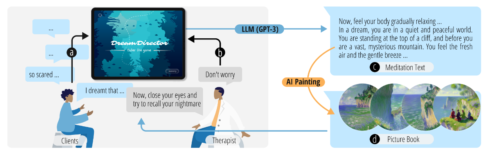

DreamDirector
Abstract
Nightmares can adversely afect individuals’ mental health and well-being, necessitating timely psychological intervention. Current nightmare therapy has set high requirements for therapists, appeared abstract to clients, and showed poor interaction between them, due to its extensive information input, lack of sensory stimulation, and exclusive reliance on one-on-one conversation. We propose DreamDirector, a visual-interactive and narrative generative system powered by generative AI. Based on Imagery Rehearsal Therapy (IRT) and Nightmare Deconstruction and Reprocessing (NDR), the system can (1) recollect the nightmare scene, (2) interpret the dream with LLM, (3) reprocess the nightmare by generating therapeutic dream visuals using AI painting alongside meditative texts, and feedback with a picture book. Finally, we verifed the usability of this system in terms of efciency enhancement and interaction promotion through a user study with 2 therapists and 16 clients. The results revealed emotional relief among clients, with a positive and impressive attitude toward visual interaction.
Authors
Yijun Zhao, Zhengke Li, Yicheng Wang, Xueyan Cai, Xiaojing Zhou, Yifan Yan, Kecheng Jin, Shiying Ding, Yilin Shao, Jiacheng Cao, Pinhao Wang, Cheng Yao, Ye Tao, Guanyun Wang
Publication Information
Conference: ACM Conference on Intelligent User Interfaces (IUI) 2025